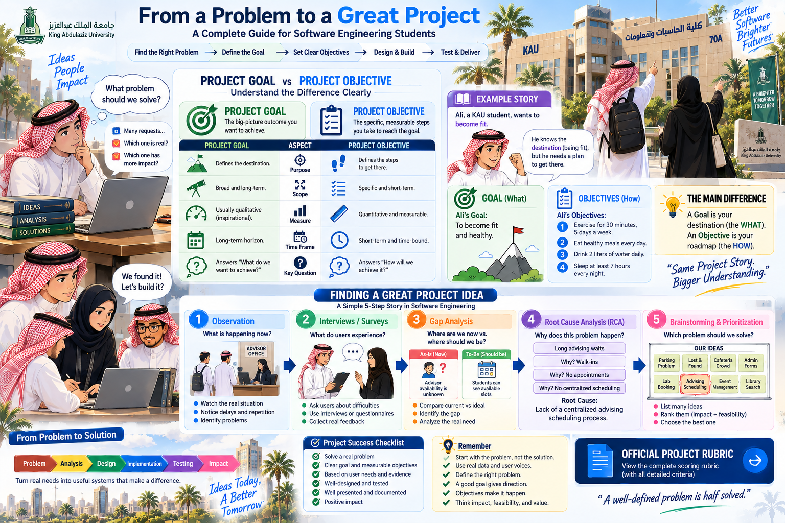

One connected solution
Problem → Requirements → Design → Behavior & Architecture → Testing.
A team-based engineering experience that takes one real-world problem from definition and requirements through design, behavior, architecture, testing and professional documentation.
The infographic is the visual roadmap for the project. Use it to understand the sequence, major deliverables and how each phase builds toward the final engineered solution.

Problem → Requirements → Design → Behavior & Architecture → Testing.
Divide responsibilities, keep models consistent, review decisions together and integrate one final report.
Your requirements, UML models, architecture and tests should describe the same system and support one another.
Before modeling the solution, make sure the team understands the real problem, the goal, and the measurable objectives. This visual connects problem discovery directly to your project journey.

See exactly where the marks go — and keep every phase connected to the same project story.
Complete structure and required template.
Problem, goals, scope and features.
Stakeholders, FR/NFR and use cases.
Class model, relationships and object diagram.
Sequence, state, activity, architecture and testing.
Clear presentation and effective teamwork.
The infographic explains the journey; these files contain the working structure, assessment criteria and reference examples you need to complete it.
The required editable structure and detailed guidance for organizing all project phases.
Download template ↓Evaluation criteria, allocated marks and Student Outcome alignment.
View rubric ↗A previous student project to help you understand expected scope and report presentation.
View report ↗A previous team's visual project presentation for scope and communication reference.
View presentation ↗